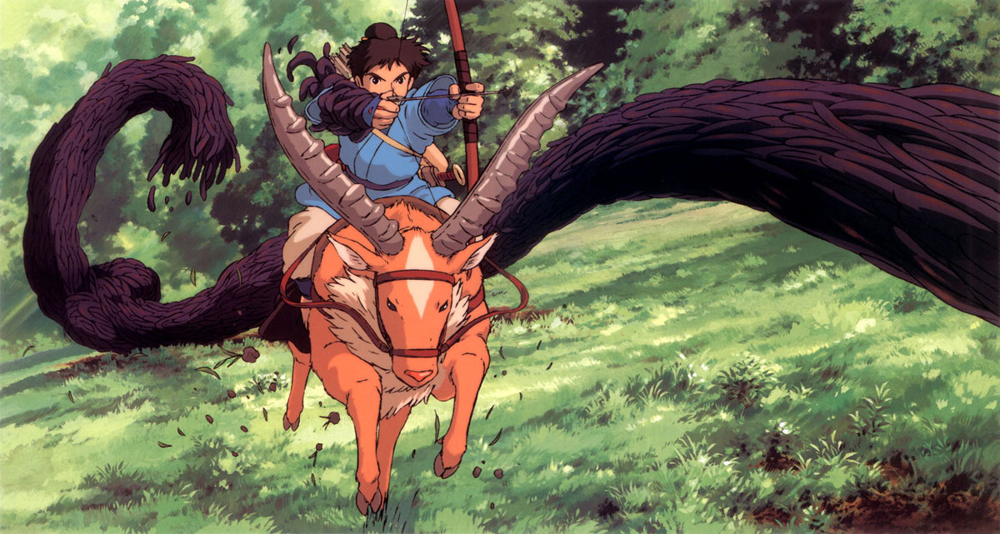
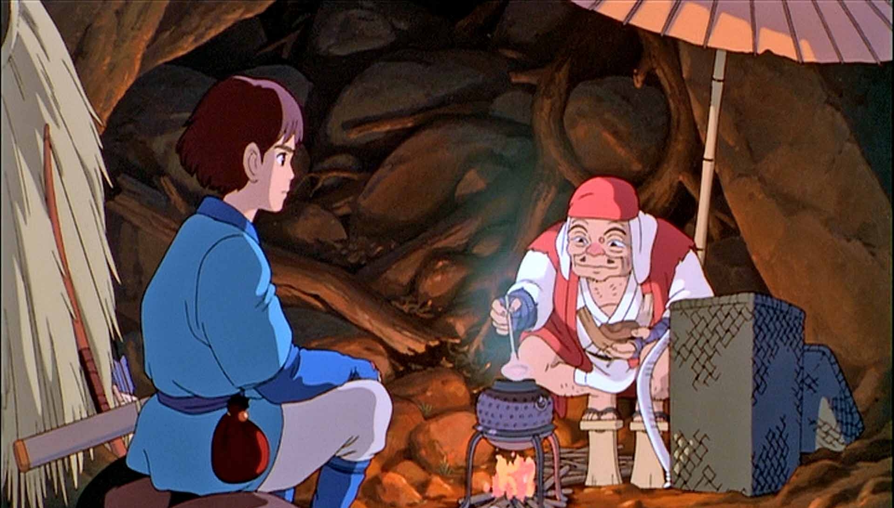
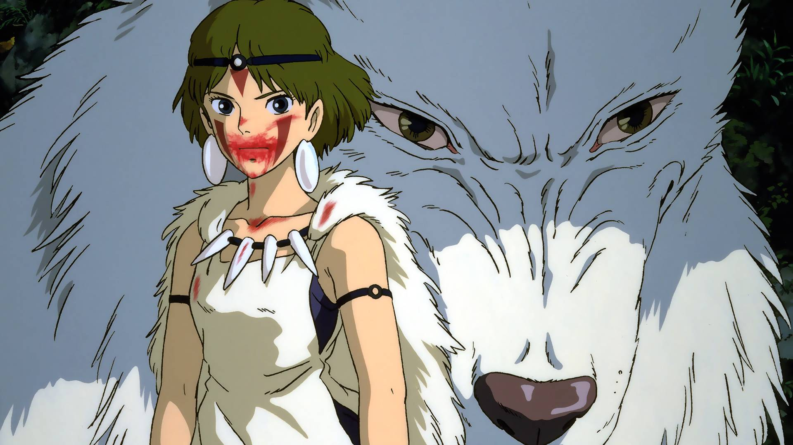
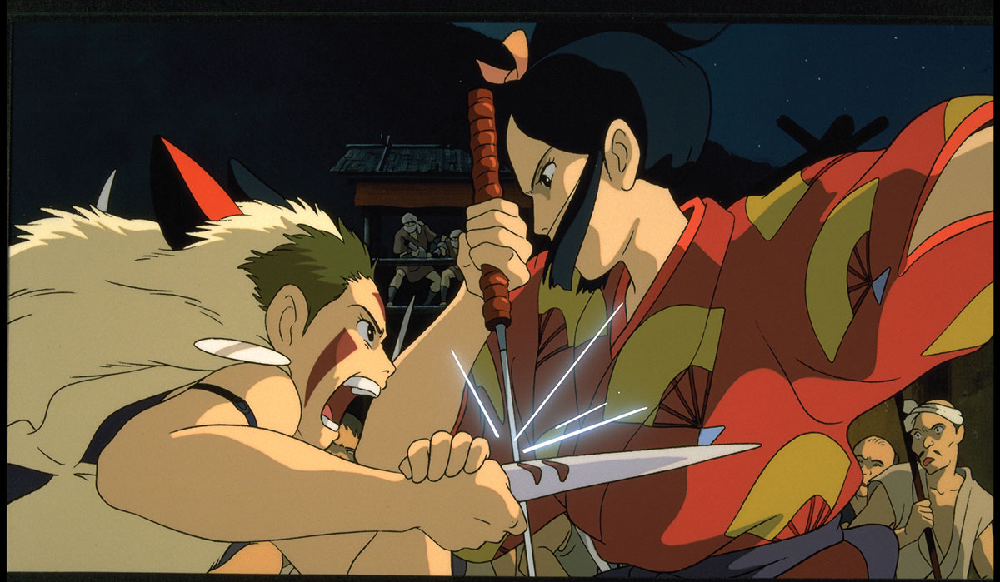
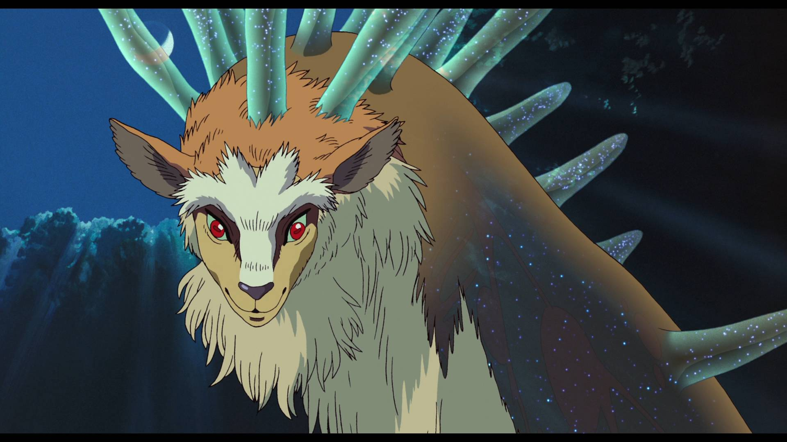
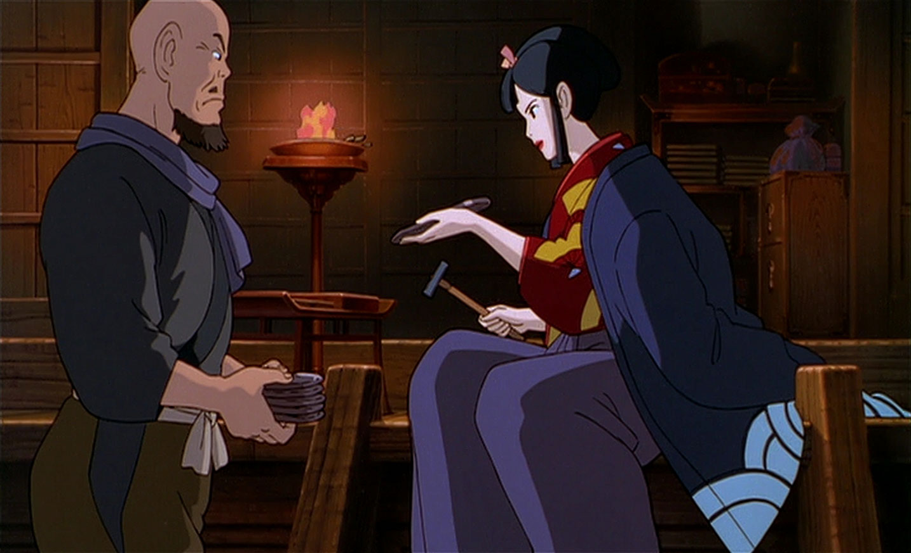
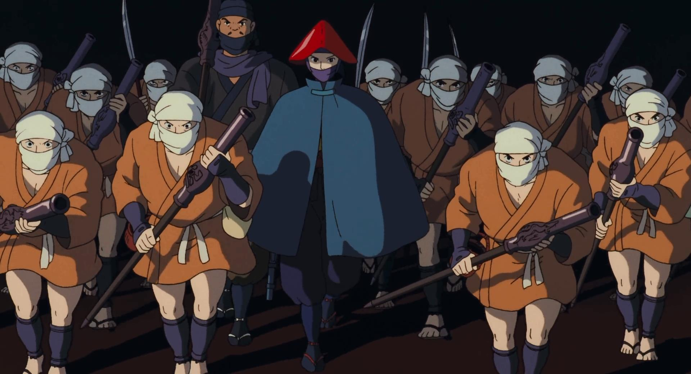

Pourquoi Princesse Mononoké est le meilleur film du monde
Bonjour, voyageur.
Tu te demandes pourquoi Princesse Mononoké est le meilleur film du monde ? Tu n'as pas vu cette œuvre époustouflante ? Laisse-moi t'expliquer en quelques minutes avec cette futuriste démonstration intégralement réalisée en HTML et CSS pourquoi tu devrais immédiatement le (re)voir.
Pour te montrer à quel point je suis capable de me plier en quatre, je me suis dit que ça serait pas mal de te présenter l'intrigue en alexandrins. Enjoy!
Laisse-moi te conter l'histoire d'Ashitaka.
Elle débute quelque part dans le Japon d'antant,
au temps des samouraïs et des divinités.
Ce jeune chef de village, à la grande bravoure
est brusquement frappé par la malédiction
d'un démon sanglier, enragé et vengeur.
Pour sauver son village d'une destruction certaine
Il se voit condamné par un sceau maléfique
à un exil forcé : son sang est infecté.
Il doit partir à l'Ouest, car c'est là qu'est la cause
du mal qui le ronge, et le tue peu à peu,
fruit d'une colère aveugle, et d'une absurde guerre.

Le voici sur les routes, fidèle à ses idées.
Il protège les faibles, quite à trancher des bras,
Son sabre est affûté, mais son cœur innocent.
Il rencontre Jiko, un moine vagabond
Qui décide de l'aider, il lui dit où aller :
Ce qu'il veut découvrir se trouve dans la forêt.

À peine arrivé à la forêt sacrée,
Royaume du Dieu-Cerf, protecteur des esprits,
il assiste à l'attaque par la fratrie des Loups
d'un convoi sur la route de la forge Eboshi.
Il sauve d'une mort certaine deux hommes tombés à l'eau
Et entrapperçoit San, fille de la louve Moro.
Il découvre, peu à peu, que ce coin reculé
Est gâté par la haine brutale, sans issue
Entre ceux de la forge, peuple prospère et fier,
solidaire, paritaire, et soucieux des lépreux
Et la forêt elle-même, dont les divins esprits
Luttent pour leur survie, et conserver leur terre.

Coincé entre deux feux, écœuré par leur guerre,
Refusant de choisir, entre ses frères humains
Et ceux de la forêt, dont il comprend la cause,
Voulant venir en aide, à San et à son clan,
mais aussi protéger la nation de ses pairs,
Ashitaka peut-il faire triompher la paix ?

Mais cessons-là le spoil, ce serait criminel !
Un très beau film
Tu ne vois toujours pas, voyageur incrédule,
ce qui fait de ce film un objectif chef d'œuvre ?
Laisse-moi te montrer son infini éclat,
mais pas en alexandrins : c'est trop me demander.
Si Princesse Mononoké est unanimement salué par la critique internationale, c'est d'abord parce que visuellement, ça en jette :
« Un conte d'une étourdissante invention visuelle »
− Libération
« Une richesse visuelle permanente »
− L'Humanité
Le film a été en grande partie dessiné à la main sur 144 000 cellulos. Une centaine de plans (environ 15 minutes) reposent sur des techniques infographiques, et un grand travail a été fait pour que ces effets se fondent parfaitement dans le rendu traditionnel. Les tentacules grouillantes et maléfiques qui entourent le bras d'Ashitaka ont par exemple été faites en 3D.
Pour la conception des décors, Miyazaki et son équipe se sont rendus sur l'île Yakushima, au sud de l'archipel nippon. Sa forêt luxuriante est peuplée de macaques et de cerfs Sika.

Le Dieu-Cerf au cœur de sa forêt
À la qualité visuelle s'ajoute évidemment la bande originale composée par Joe Hisaishi, compositeur attitré de Miyazaki, qui ne dédaigne pas les orchestrations épiques et les envolées tragiques.
Bon, c'est un film magnifique, certes. Mais ce n'est pas suffisant pour en faire le meilleur film du monde, n'est-ce pas ? Laisse-moi t'expliquer ce qui en fait un authentique chef d'œuvre.
Avertissment : Pour la suite, on va spoiler méchamment, ce serait mieux d'avoir vu le film avant.
La forge Eboshi : un modèle de société dans le Japon féodal
Princesse Mononoké se déroule dans le Japon médiéval à une époque où le pays, en proie à de nombreuses guerres de pouvoir, est soumi aux lois féodales. Dans ce monde violent et injuste où les pillages sont monnaie courrante, la société mise en place par Dame Eboshi est modèle. La population de la forge peut vivre dignement de sa production, contrairement aux paysans qu'Ashitaka a rencontré jusque là. Eboshi leur assure aussi la sécurité grâce à des armes technologiquement avancées, pour les protéger des attaques, d'où qu'elles viennent. Elle se soucie de son peuple et ne règne pas par la terreur.
La société de la forge est aussi résoluement féministe. Les femmes de la forge, avant d'être reccueillies par Dame Eboshi, étaient destinnées à la prostitution. Au contraire, elles ont ici le même pouvoir que les hommes. Autre symbole important : ce sont des femmes qui constituent les troupes d'élites de Dame Eboshi, celles-là mêmes qui assurent la sécurité du village.

Dame Eboshi, une dirigeante moderne
Enfin, Eboshi reccueille aussi les lépreux, pourtant traditionnellement bannis de la société et leur rend à eux aussi leur dignité. Ils ont un rôle de premier plan au sein de la forge, puisque ce sont eux qui conçoivent les armes à feu nécessaires à la défense de l'indépendance du village. Nul doute que sans ces armes, l'empereur n'aurait pas hésité une seconde à s'emparer de forge et à la soumettre à sa loi.
San et Ashitaka, la rencontre d'un idéaliste et d'une pessimiste
Je n'ai pas beaucoup parlé de San jusque-là (alors que c'est un peu d'elle dont parle le titre du film quand même). San est l'un des personnages les plus pessimistes de Miyazaki. Abandonnée par les humains, élevée par les loups, elle voue une haine profonde à ceux de la forge qui menacent la forêt, et à Dame Eboshi tout particulièrement. Elle ne voit aucune bonté dans l'espèce humaine, et ce sent même plus louve que femme.
San, héritière de la fratrie des Loups
Au contact d'Ashitaka elle évolue, perd un peu de sa volonté vengeresse mais ne renie pas non plus ses convictions : elle ne pardonne pas aux humains. Ashitaka aussi évolue à son contact. Lui qui a toujours cherché à faire le bien autour de lui est assez perturbé par cette situation où il ne peut pas éviter la violence et la haine. Sa rencontre avec San l'amène lui aussi à reconsidérer sa position dans le conflit. Son voyage devient alors un parcours initiatique : il a perdu en pureté d'âme, mais il a gagné en maturité.
Comme on pouvait le deviner, une relation amoureuse se tisse entre les deux protagonistes. À plusieures reprises, ils ont la possibilité de partir tous les deux (la louve Moro le propose même à sa fille), mais préfèrent rester sur le théâtre des opérations. Cette relation ne s'achève pas non plus de manière conventionnelle : par respect pour leurs convictions divergentes, ils se séparent sur la vague promesse de se revoir.
San et Ashitaka
Une tragédie anti-manichéenne
Se taper dessus, ce n'est pas très sympathique. Maintenant que l'on a dit cela, peut-on vraiment critiquer l'attitude des esprits de la forêt qui, après tout, luttent pour la préservation de leur forêt millénaire ? Et à l'inverse, peut-on franchement repprocher au peuple de la forge de tout faire pour préserver son indépendance face à un empereur injuste ? Doit-on blâmer Dame Eboshi pour ses actes qui ne visent qu'à préserver la société progressiste et utopique qu'elle a réussie à fonder ?

Toute la violence déployée par Dame Eboshi vise à préserver la société progressiste de la forge.
Alors, évidemment on peut penser que les aspirations des uns et des autres ne s'opposent pas mais que, au contraire, ils pourraient vivre en symbiose. Ce qui leur manque avant tout, c'est le dialogue, leurs rares rencontres ayant surtout pour but de s'entre-exterminer. Ashitaka essaie difficilement d'établir ce dialogue. Mais on ne peut pas franchement dire que ce soit une réussite. Pourquoi ? Mais tout simplement, parce que les deux clans luttent pour leur survie ! Pour sa survie, la forge doit détruire la forêt, et donc tuer ces protecteurs. Pour leur survie les esprits doivent protéger la forêt du Dieu Cerf. Et donc tuer ceux qui la détruisent.
Princesse Mononoké, c'est sans doute le film qui, le plus, refuse le manichéïsme. Il n'y a pas de méchants dans Princesse Mononoké, il n'y a que des gentils, des gentils qui s'entretuent pour d'excellentes raisons. Tragique, isn't it ?
San, prête à attaquer Dame Eboshi
Puisqu'on parle de tragédie, on ne peut pas franchement dire que la fin soit une happy end. Certes, les villageois ont compris qu'ils devaient désormais se développer en osmose avec la nature, mais leur forge est détruite. La nature semble renaitre sous la forme d'une prairie, mais la forêt du Dieu Cerf ainsi que la plupart des créatures qui la peuplaient ont quand à elles disparu à tout jamais. Comme si, pour que le dialogue s'établisse, un grand massacre avait été nécessaire. Ce qui n'est pas franchement réjouissant comme perspective.
Un film de guerre
On dit surtout de Princesse Mononoké que c'est un film écolo, ce qui est vrai pour à peu près toute la filmographie de Miyazaki. Mais ce qui fait vraiment la force de Princesse Mononoké, c'est la manière dont le film parle de la guerre. La guerre, c'est un peu le sujet principal du film. La guerre, c'est le véritable ennemi de notre héros, car c'est contre la guerre qu'il se bat. La guerre, c'est aussi la cause de la malédiction qui ronge son avant-bras. Mais comme tu as pu t'en appercevoir, lecteur de passage, toutes les tentatives d'Ashitaka ne peuvent empêcher cette guerre tragiquement inévitable.
San et ses frères participant au baroud d'honneur des sangliers contre la forge
Miyazaki est profondément antimilitariste. Et il n'en n'est pas à son coup d'essai. Son deuxième film, Nausicaa de la vallée du vent parle aussi d'une guerre qui s'impose à son héroïne. Elle aussi va essayer de permettre le dialogue entre les humains et la nature, avec plus de succès d'Ashitaka. Princesse Mononoké, c'est donc un peu la version pessimiste de l'histoire. Il faut dire que Miyazaki a évolué entre-temps et que sa vision du monde ne semble pas s'être améliorée.
Au passage, Miyazaki a aussi pris position il y a quelques années contre une modification de Constitution japonnaise, voulue par le Premier Ministre Shinzo Abe, remilitarisant le Japon. En effet, depuis la fin de la Seconde Guerre mondiale, le Japon n'a pas d'armée, ce à quoi tiennent un certain nombre de japonnais, dont le maître de l'animation.
Les loups attaquant les moines-soldats de Jiko
Pourquoi Princesse Mononoké est le meilleur film du monde
C'est déjà la fin de cet article. Tu sais désormais pourquoi Princesse Mononoké est le meilleur film du monde. Pour que tes amis soient eux aussi convaincus, partage !